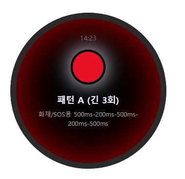
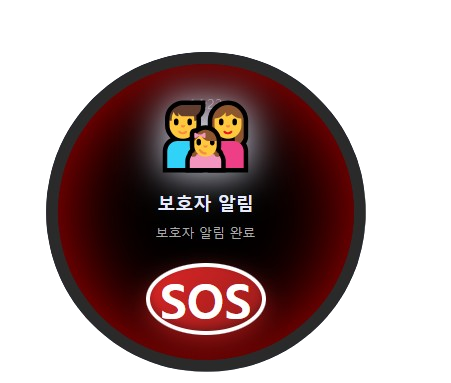

01
MEDICAL LITERACY
의료 현장 이해
외과계 중환자실에서 수술 환자와 간·신장이식 환자를 직접 간호한 경험이 있습니다. 임상 경험을 통해 의료진의 용어, 환자 관리 과정과 병원 업무 흐름에 대한 이해를 갖췄습니다.
Healthcare Business Planner / Solution Sales
중환자실 간호에서 서비스 기획과 PM, 제품 출시와 고객 운영으로 역할을 넓혔습니다. 임상에서 쌓은 이해를 디지털 헬스케어에 적용했고, 데이터 활용과 서비스 기획 분야의 수상으로 이어졌습니다.
01 / THE CLINICAL FOUNDATION
환자와 의료진을 가까이에서 이해한 경험이, 이후 서비스의 요구사항과 이용 흐름을 설계하는 바탕이 됐습니다.
MEDICAL LITERACY
외과계 중환자실에서 수술 환자와 간·신장이식 환자를 직접 간호한 경험이 있습니다. 임상 경험을 통해 의료진의 용어, 환자 관리 과정과 병원 업무 흐름에 대한 이해를 갖췄습니다.
SERVICE ARCHITECTURE
건강 데이터 연계 서비스와 수면관리 서비스를 기획했습니다. 임직원 건강검진 설계·프로그램 서비스 기획과 만성질환 관리 서비스 기획을 각각 수행했습니다. 알고리즘·화면 설계부터 일정·인력 조율, 운영 개선까지 맡았습니다.
CONSULTATIVE SALES
제안서와 RFP를 작성하고 기업 고객의 프로그램을 운영했습니다. 고객 요구를 파악해 안내 방식과 운영 구조를 조정했습니다.
02 / FROM CLINICAL INSIGHT TO SERVICE
데이터가 상담과 생활 관리로 이어지도록 설계했습니다.
각 프로젝트에서 맡은 역할과 실제 산출물을 펼쳐보세요.
03 / LAUNCH & OPERATION
제품 출시, 고객 안내와 프로그램 운영까지 맡았습니다.
기획 이후의 실행을 이어 온 경험입니다.


| 관리 항목 | 확인 내용 | 후속 실행 |
|---|---|---|
| 참여·이용 현황 | 참여 이후 이용 흐름 | 안내 방식 점검 |
| 상담 후속 관리 | 후속 확인 상태 | 담당자 대응·기록 |
| 고객 피드백 | 반복되는 이용 불편 | 개선 과제·진행 확인 |
HOW THE EXPERIENCE CONNECTS
현장과 고객 이해
임상과 기업 고객 운영 경험을 바탕으로 업무 맥락과 실제 사용 환경을 파악해 왔습니다.
04 / RECOGNITION
임상 경력에 서비스 기획과 데이터 활용 경험을 더했습니다. 수상 이름과 함께, 직접 맡아 수행한 일을 보여드립니다.
국회의장상
간호에서 시작한 경력이
데이터 활용 분야의 수상으로 이어졌습니다.
05 / THE NEXT CHAPTER
이미 수행해 온 역량을 바탕으로, 입사 후 병원 고객의 요구 파악과 제안·도입·운영 업무에 적용하겠습니다.
보유 역량을 선택하면 큐로직에서의 적용 방향이 펼쳐집니다.
외과계 중환자실 간호를 통해 의료진의 용어와 환자 관리, 병원 업무 흐름을 익혔습니다.
병원 사용부서와 구매 담당자의 요구를 구분하고, 실제 사용 환경을 반영한 제품 설명과 도입 제안을 준비하겠습니다.
CAREER / THE FULL JOURNEY
현장 전문성, 서비스 설계, 고객 운영을 단계적으로 확장해 온 경력입니다.
CLINICAL CREDENTIALS
간호사 면허 · 보건교사 2급
LET'S BUILD THE NEXT FLOW
의료 전문성, 서비스 기획, 고객 커뮤니케이션 경험을 바탕으로 큐로직의 플랫폼과 제품이 현장에 안착하는 과정을 함께 만들겠습니다.